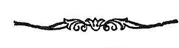

अथ
श्रीतन्त्रालोके

श्रीमन्महामाहेश्वराचार्याभिनवगुप्तविरचिते
श्रीजयरथकृतविवेकाख्य टीकोपेते
पञ्चत्रिंशमाह्निकम् ।
तैस्तै भेदैरशेषमवतार्य मातृकासारम् ।
जगदुद्धर्ता जयति विभुः सर्ववित्कोपः ॥
इदानीं सर्वशास्त्रकवाक्यतावचनद्वारा द्वि-
तीयार्धेन सर्वागमप्रामाण्यं प्रतिपादयितुं प्रति-
जानीते
अथोच्यते समस्तानां
शास्त्राणामिह मेलनम् ।
तत्र आगमस्यैव तावत् साधारण्येन लक्ष-
णमाह
इह तावत्सम स्तोऽयं
व्यवहारः पुरातनः ॥ १ ॥